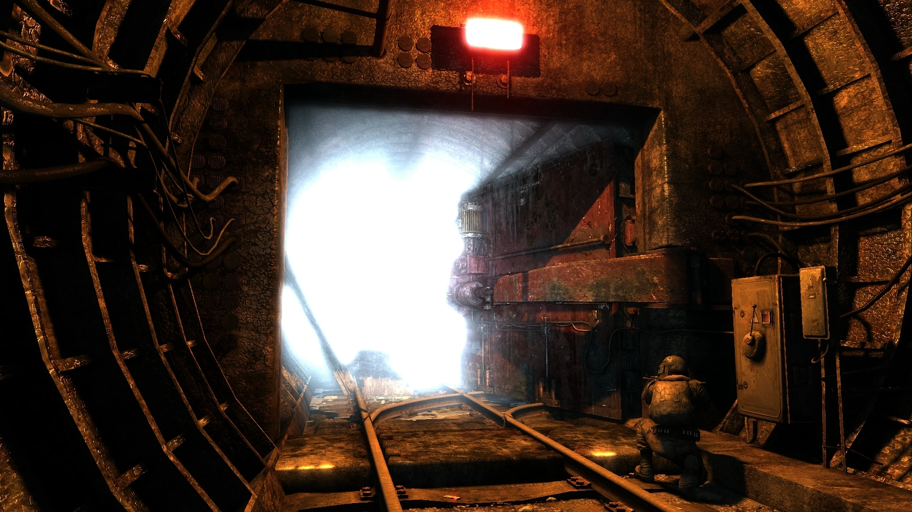

Aleksei decide no ayudar a Dimitri, por lo que él decide salir corriendo hacia el metro para salvar su vida. usto antes de llegar al metro, Aleksei comienza a estornudar y a sentir que el gas tóxico de la superficie está afectando su cuerpo, por lo que se da cuenta de que no tiene mucho tiempo antes de que el gas tóxico acabe con él. Aleksei se siente culpable por haber abandonado a Dimitri, pero también sabe que no tenía otra opción si quería sobrevivir. Al llegar al metro, Aleksei se siente aliviado de estar a salvo, pero también se siente solo y perdido sin Dimitri. A pesar de haber escapado del peligro inmediato, Aleksei sabe que todavía tiene un largo camino por recorrer para encontrar a sus amigos desaparecidos y llegar a Polis. Sin embargo, ahora se siente más cauteloso y alerta, sabiendo que el peligro puede estar acechando en cualquier momento.
